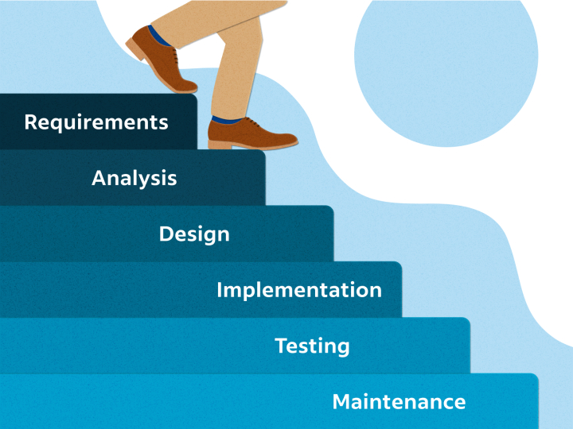

Hva er en metode?
Systemutviklingsmetoder er strukturerte tilnærminger som brukes i planlegging, design, utvikling, testing og vedlikehold av informasjonssystemer. Disse metodene gir et rammeverk og veiledning for hvordan man kan gjennomføre et utviklingsprosjekt for å sikre effektivitet, kvalitet og en god leveranse som oppfyller kravene til kunden. (Avison & Fitzgerald, 2003, ss. 19-22)
Det finnes hovedsakelig to typer metoder: strukturerte og smidige.
Strukturerte metoder
Strukturerte metoder er tradisjonelle systemutviklingsmetoder som følger en lineær, sekvensiell tilnærming til utviklingsprosessen. Disse metodene er preget av en klar, fasebasert struktur som legger vekt på grundig planlegging og dokumentasjon. Et eksempel på en strukturert metode er fossefallsmetoden. (Kendall & Kendall, 2020, ss. 42-46)
Fossefallsmetoden
Fossefallsmetoden, eller «Waterfall Model», er en av de mest kjente tradisjonelle metodene. Den går ut på å definere fasene av prosjektet før arbeidet starter, og deretter følge dem i en lineær rekkefølge. Man kan vanligvis ikke gå tilbake til tidligere faser, noe som gjør denne metoden lite fleksibel. Det er vanligvis sju faser i fossefallsmetoden:
- Undersøke: Definere problemet og undersøke informasjonsbehov og eksisterende systemer.
- Analyse: Samle dokumentasjon om eksisterende løsning og analysere behovene for det nye systemet.
- Design: Utvikle en designprototype i samarbeid med sluttbrukerne.
- Utvikling: Ferdigstille systemet gjennom flere aktiviteter.
- Implementering: Lansere produktet ved bruk av strategier som big bang, parallelle systemer, innfasing eller pilotimplementering.
- Vedlikehold: Overvåke, evaluere, reparere og forbedre systemet gjennom hele levetiden.
- Avslutning: Planlegge utfasing eller erstatning av systemet når det ikke lenger er lønnsomt å støtte det.